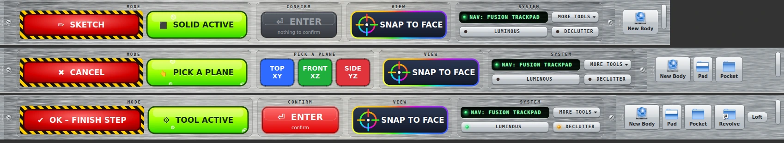

SimpleCAD
FreeCAD, decluttered, Fusion 360 style. Sketch → solid with one big button.
View on GitHub Releases
One big button
Sketch, finish sketch and confirm a tool, all on one button (Ctrl+Enter).Only what you use
Everyday Part Design and Sketcher tools; everything else is one menu away.See what's active
Rainbow faces, a swirl on the selected face and an ACTIVE badge.Trackpad navigation
Two-finger pan, orbit around screen centre, pinch to zoom.Luminous mode
High-contrast view for long sessions.Safe
Hides toolbars, never your model; a restart restores everything.Install
- Close FreeCAD.
- Copy the
simplecadfolder into FreeCAD'sModfolder and name itSimpleCAD. - Start FreeCAD and pick SimpleCAD.
Or use Addon Manager → Preferences → Custom repositories with the repository URL above. Full steps and troubleshooting are in the README.